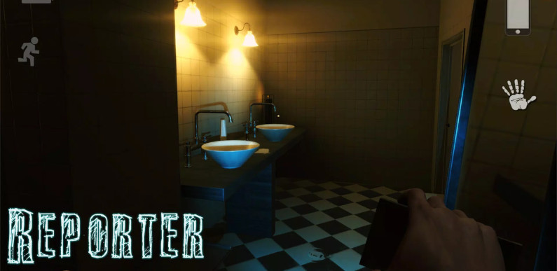
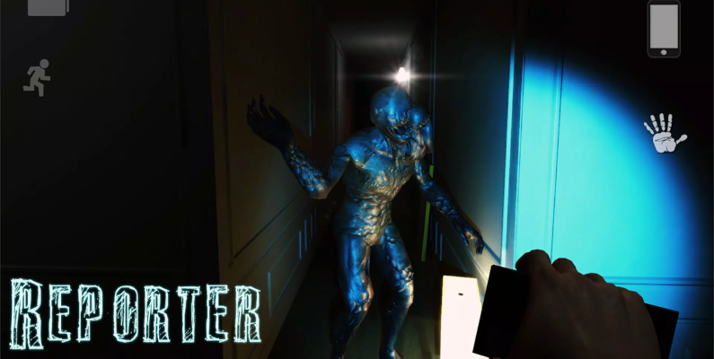

Reporter: Scary Horror Game
Esse é um jogo de survival horror da Agaming+, uma developer de games mobile. Com uma pegada Out last e Silent Hill é muito assustador e traz puzzles divertidos, mas que podem te dar trabalho.
O jogo está em português BR com diálogos legendados, com apenas algumas mensagens em inglês, mas nada que possa atrapalhar você a entender o jogo ou que atrapalhe sua gameplay.
Reporter I
O preimeiro jogo da da serie se é sobre um reporter de uma cidadezinha que está investigando uma serie de assacinatos que foram cometidos por um assino desconhecido, a polícia tenta maacarar os fatos, mas acaba vazando e então as historia do game se inicia.
Esse procura pela verdade do protagonista vai trazer momentos assustadores e, também, vai te instigar a descobrir mais do que tá rolando.
Reporter II
Sem dar muito spoilers do primeior game, nesse o protagonista está sendo perturbado por pesadelos horripilantes e por uma menininha que sempre aparece para ele em quanto está dormindo. Você vai ter que emcarar momentos de muito terror e tensãoe e tentar descobrir o que são todas essas coisas que estaõ acontecendo
Após você zerar ambos os jogos, tenho certeza que vai ficar aquele gostinho de quero mais de tão bom que são esses games. Por conta de ser um jogo para celulares e ter uma alta qualidade gráfica e de jogabilidade muito boa, esses jogos são pagos ambos por um valor de R$ 0,99 cada, mas também tem a versão lite do primeiro jogo que é grátis.